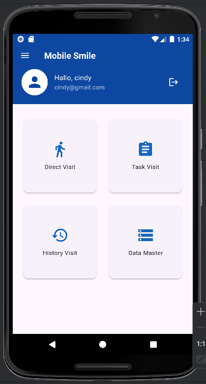
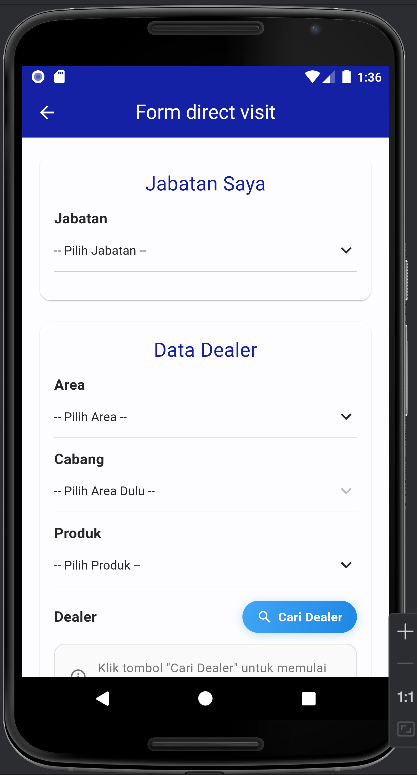
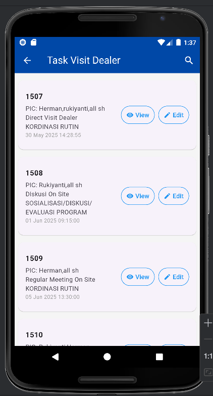
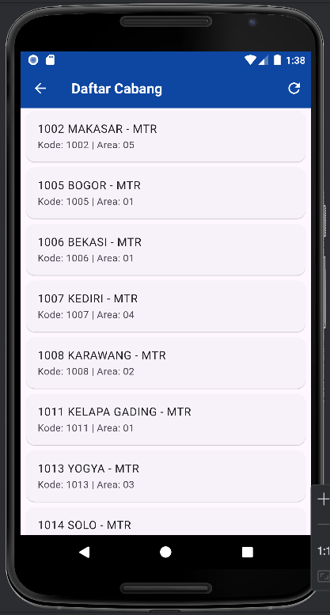

Mobile Smile (Sistem Manajemen Kunjungan Dealer)
Mobile Smile adalah aplikasi mobile yang dirancang untuk mempermudah dan mendokumentasikan proses kunjungan sales/marketing ke dealer. Aplikasi ini mendukung fitur-fitur seperti pencatatan kunjungan langsung (Direct Visit), pengelolaan tugas kunjungan (Task Visit), dan riwayat kunjungan (History Visit), serta data master yang relevan untuk PT Suzuki Finance Indonesia.
Proyek ini merupakan bagian dari pengembangan internal di PT Suzuki Finance Indonesia, dengan fokus pada peningkatan efisiensi operasional kunjungan lapangan.
- Peran: Mobile Developer
- Kontribusi:
- Mengembangkan dan memelihara fitur utama seperti Direct Visit, Task Visit, dan History Visit.
- Membangun antarmuka pengguna yang intuitif dan responsif menggunakan Flutter.
- Mengintegrasikan frontend Flutter dengan backend Laravel untuk sinkronisasi data kunjungan dan dealer.
- Menerapkan pelacakan lokasi GPS dan upload foto sebagai bukti kunjungan yang valid.
- Teknologi: Flutter, Laravel, MySQL, GitHub
- Fitur: Direct Visit, Task Visit, History Visit, Data Master, Geolocation Tracking, Photo Upload